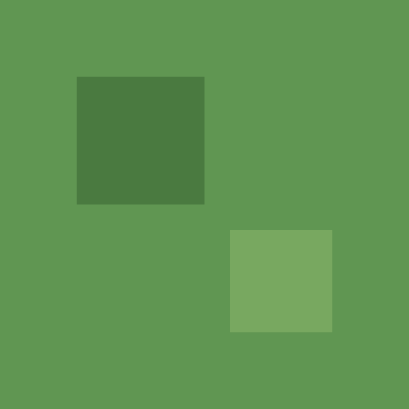
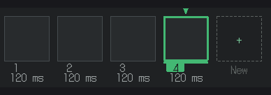

GameMaker Sprite and Tileset Export
Export a whole GameMaker project: the sprite, the tileset, and a room laid out.
A GameMaker project you double click.
Save Once, Open It in Your Engine


The Project
Export a GameMaker Project: a folder GameMaker opens as-is, with your tileset as a sprite and a tile set, and each tile map layer as a tile layer in the room.
Every blob terrain in your tileset as an Auto Tile Library, ready for the room editor's autotile brush.
Sprite Strips
Export a sprite strip for GameMaker: a row of frames named the way GameMaker expects, sliced automatically on import. Export a selected tag in its own play direction.
At a Glance
| Price | $7.99 on Steam |
|---|---|
| Platforms | Windows and Linux |
| GameMaker Export | A whole project: the sprite, the tileset, and a room laid out |
| Sprite Strip | A row of frames named the way GameMaker expects |
Plain Answers
What Does It Run On?
Windows and Linux.
What Does It Cost?
$7.99 on Steam.